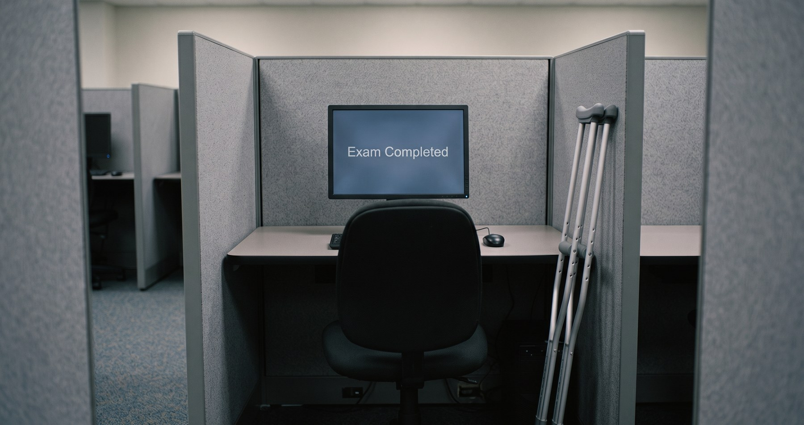
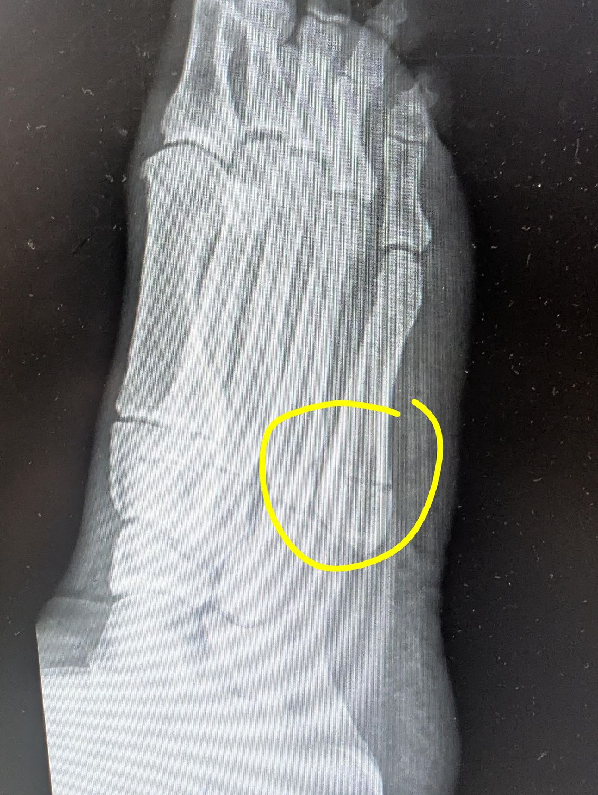

What Actually Prepared Me for an AI Audit Certification?
What Actually Prepared Me for an AI Audit Certification?
Three things, and I only paid for one of them. The $249 practice questions covered the examinable core. Free AI-generated videos I listened to over lunch, on errands and falling asleep filled in foundational vocabulary. And the systems I had already built with AI provided answers the practice questions did not ask.

Three sources
I passed ISACA’s Advanced in AI Audit certification. It cost me $758 and a few months of fifteen-minute mornings.
Here is the part I did not expect. Three things got me through that exam, and I paid for only one of them.
The one I paid for was ISACA’s question, answer and explanation database ... $249 as a member, $349 if you are not one.3 I bought that and nothing else. No review manual, no course. It came with a six-month access window, which turns out to be a design decision worth noticing: I purchased it on the ninth of May and it expired on the eighth of November, so the product is priced per window rather than per purchase, and the clock starts whether you have started or not.
The second was a set of two-hour YouTube videos about the history of AI and machine learning that I listened to while eating lunch and while falling asleep.2 Those were free.
The third was work I had already done, creating and building with AI, over the previous year.
Only the first of those three was designed to prepare me for an exam. It also felt insufficient on its own.
Fifteen minutes, every day, including on vacation
My method was not clever. Ten to thirty practice questions a day, 15-to-30 minutes every day. An hour a day on weekends.
I spent a vacation week in Maui and studied my practice questions about an hour a day while listening to AI educational videos during daily 20 mile bike rides. I spent another week of vacation at Lake Almanor and studied about thirty minutes a day. Not because I am disciplined on vacation ... because I know what happens to me when I am not.
When a question came back wrong I would read all four explanations, the three wrong answers and the right one, and then read them again later, and again after that, until the shape of the question stuck rather than the answer to it. The database has flashcards and a crossword game as well. I used both, and I am slightly embarrassed at how terrible I am at crossword puzzles.
A few audit colleagues have asked me for advice. I tell them the same thing: study at least fifteen minutes a day every day, and at least an hour on the weekend. Otherwise time slips past you and you find yourself cramming.
I give that advice with some authority, because I have failed a certification exam by procrastinating. Twice.
Both of those were the CIA. Both times I did the same thing, which was to plan a serious study effort, not start it, and then compress it into the last two weeks.
Then I passed the CIA this year, doing a small amount every day for a long time.
That is the same exam, twice failed and once passed, with the method as the only thing that changed. I have never had cleaner evidence about anything. Everything else I have earned came the same way ... a six-exam Microsoft Certified Systems Engineer many years ago, and now the AAIA.
I keep a ten-year-old speeding ticket in my wallet. It is there so that when I am running late I have a physical object in my pocket that has already told me how that goes. The two failed CIA exams occupy the same space in my head. They are a bought lesson that turned into a directive control.1
The questions that were not in the question bank
I finished the exam knowing I had seen a fair amount of material that the practice database did not contain.
Not a lot of it. But there were questions where the practice bank had given me the vocabulary and not the situation, and I answered those out of somewhere else ... out of having built agentic systems, having watched them fail in specific ways, having learned from more advanced agentic engineers (in person and online) and having written about why.
I have spent the past year building things and publishing what happened. Agent workflows that execute and then report on their own execution. A publish control that told me six steps were complete on work it had never inspected. A knowledge base with a second date on every page recording when a human last confirmed it was still true. All of that was apparently part of my exam preparation.
That is not a claim that experience beats studying. I would have failed this exam on experience alone, comfortably. The question bank was necessary. It was the thing that taught me ISACA’s vocabulary, its domain weightings, and the specific shape of how it asks.
But the gap between what a question bank can hold and what an exam can ask is real, and it is filled by having done the work. I did not know that was true until I was sitting there.
The plumbing, explained slowly
The second source is the one I would recommend hardest, and the one I expected least.
While I ate lunch, while I ran errands, and while I was falling asleep, I listened to long-form videos about the history of artificial intelligence and machine learning. Two hours apiece, deliberately unhurried. Turing and the Dartmouth workshop. Perceptrons. The AI winters. Backpropagation. Support vector machines. GPUs and AlexNet. Transformers, GPT, reinforcement learning from human feedback.
They are good. The narration is calm, the pronunciation is almost always right, and the history is structured so that each idea arrives when you need it and connects to the one before. That last part is what made them useful.
Because what I actually got from them was the plumbing. Not headlines about what a model can do this month ... the mechanics underneath, and the order the mechanics arrived in. How a perceptron relates to a network, how backpropagation made training possible, why attention changed what could be built, and how those pieces stack into the reason a language model works as well as it does. I understood most of those individually. I had not held them as a sequence.
ISACA publishes the exam’s domain outline, and AI Operations alone accounts for 46 percent of it.3 The terms living under that heading are exactly the ones those videos had walked me through ... transformer architecture and the attention mechanism, reinforcement learning from human feedback, the role graphics processing units played in unlocking the parallel processing that made training massive neural networks possible in the first place. Having the history behind those terms rather than only the terms themselves turned out to matter, and I had it because a calm voice explained where each of them came from while I was driving to the dry cleaner.
I consume a lot of AI content and nearly all of it is current. Current content assumes the foundation, because the foundation is not news. The exam wanted the foundation.
Two things about those videos I should say plainly rather than leave out.
The first is that every one of them carries a label from YouTube: Made with AI. Sounds or visuals were altered or fully generated. So I prepared for a certification in auditing artificial intelligence partly by listening to artificial intelligence explain itself, and I would recommend it.
The second is that I did not verify any of it. Their descriptions cite the real literature ... Turing’s 1950 paper, the Dartmouth proposal, the Rumelhart, Hinton and Williams backpropagation paper in Nature, AlexNet, Attention Is All You Need ... and everything I recognized was accurate. But recognizing something that feels familiar is not verification, and I was in no position to check the rest. Quite simply, this was a well-made secondary source that was free and pleasantly effective.
The closest thing I can compare them to is NotebookLM, which does the same job on material you supply yourself: takes something structurally dull and retells it well. That is a real capability and it is worth more to a studying adult than it sounds.
Exam day
I took it in person, at a test center on Executive Park Boulevard in San Francisco, on crutches.
I had a broken metatarsal and an uncomfortably super swollen ankle and foot in a hard boot (the doctor recommended a cast). The staff found me a seat where I could set the crutches down and held the doors for me going in and coming out, which I mention because it was wonderfully kind.

I chose in person over remote proctoring on purpose, and I ran the comparison before I booked.
My home office is wall-to-wall electronics. To sit that exam at my own desk I would have had to clear it, document it, and then satisfy a proctor over a webcam that a room full of screens and devices was acceptable. I priced that out in time and aggravation which added up to much more than a twenty-minute drive to the exam center.
I also knew what I was buying, because I sat for my CIA at a different center earlier this year. Test centers are a known quantity. The security is real and it is reasonable, there are no distractions, and they offer you a choice of noise-blocking earmuffs or foam earplugs at the door. I take the foam plugs. With those in, I can only hear my breath.
The controls themselves are worth looking at. Everything I brought went into a locker. There are cameras throughout the room. A staff member ran a metal-detector wand over me before I sat down.
That is more surveillance than remote proctoring, and it is the arrangement I prefer. The test center’s controls are bounded, proportionate, and pointed at the room rather than at me. They do their work at the door and then leave me alone with the questions for two and a half hours. Nobody is watching my face to make sure my eyes remain fixed on the monitor. Remote proctoring inverts all of that: fewer controls, applied continuously, to a space nobody can fully see, with a camera pointed at my back.
Given a choice between a strong control at a boundary and an invasive weak control applied constantly, I will take the boundary.
Also, the test center sits near the coast of the San Francisco Bay with a beautiful view where I paused for a few minutes to contemplate before heading back home.
The one finding I did not go looking for
I sat for the exam on the eighth of August at half past eleven in the morning. Ninety questions, two and a half hours, four options each, one best answer. Machine-scored.
When I finished with 30 minutes to spare, I submitted, worked through the post-exam survey, and got nothing. No score, no pass, no fail. I collected my crutches and left.
I want to be careful here, because I am about to describe a gap and I would rather describe it accurately than dramatically.
ISACA’s published documentation says that should not have happened. The AAIA Exam Candidate Guide states that candidates “will be able to view their preliminary passing status on screen immediately following the completion of the exam,” and adds that you are not permitted to photograph “the exam results screen.”4 Their support site says the same thing in plainer words: you will be able to view your preliminary result (pass or not pass) on the screen immediately following the completion of your exam.4
There was no such screen. If there was, it did not show itself to me, and I was eagerly looking ... I had just spent three months on this.
So I went to find out whether I was alone on this.
I searched for exam reviews, and it is not just me. A CISA candidate describes finishing, completing the post-exam surveys, and then “nothing. No preliminary results,” and having to contact ISACA support, who said they would ask PSI whether a preliminary result could be produced.5 And on ISACA’s own blog, an AAIA candidate writing generously about failing the exam describes walking out of the room and waiting “with excitement” before learning he had scored 445.6 Nobody who saw 445 on a screen walks out excited.
That is a documented control not reliably delivered, which is the most ordinary audit finding there is and also one of the most consequential, because everyone downstream wants to know whether to celebrate or to resume their studies.
I filed my observation. There is a feedback control on that support article ... a button that lets you flag the content as inaccurate ... and I used it, quoting the sentence and explaining what actually happened. I do not know what will come of that, and I am publishing this without knowing.
Two things I want to put next to that finding, because leaving them out would make it look worse than it is.
The official score arrived faster than promised. ISACA commits to an official score report within ten working days. My exam was the eighth; the result reached me around the eighteenth. That is roughly ten calendar days, which beats their own service level, and I’m glad for that.
Those are two different things and I want to separate them clearly, because conflating them would be sloppy.
A scaled score across three weighted domains is a report. Producing it, checking it, and sending it is real work, and ten days is a reasonable window for real work. Fine.
But pass or fail is not a report. It is a comparison between a number and a threshold, and the machine performed it the instant I clicked submit. That answer existed, complete and final, while I was still in the chair. It is the one thing in this entire process that required no processing at all, and it is the one thing I waited more than a week to learn.
Their own documentation says I should have had it before I stood up.
And the fifty dollars is not an AAIA quirk. After passing, you pay a $50 application processing fee and submit an application for the certification itself. That is standard across every ISACA credential. I had been irritated by it, because the substance of my application is a fact ISACA already holds ... that I have been a CISA in good standing with them for ten years ... and because eligibility had already been verified once, at registration. You cannot even register for the AAIA without an active qualifying certification.3
Having looked at it properly, the finding is not that the fee is silly. It is that the process does not risk-adjust. A ten-year certificant in good standing with the issuing body goes through the identical verification as someone with no prior relationship, on a fact the issuer verified at the gate three months earlier. That is a control applied uniformly where a risk-based control would be cheaper for everyone, including ISACA.
I would write that up at work. So I am writing it up here.
What I would tell the next auditor
Several people I work with are studying for this now. As far as I know, and I am not certain of this, I am the first auditor at my firm to pass it. I know of nobody else, and the few people I have asked do not either. That is less a fact about me than a fact about timing: the certification is barely a year old, and a large audit function is, right now, in the middle of deciding it matters.
What I would tell them is the boring thing. Buy the question bank. Do fifteen a day. Start the day you buy it, because the window closes whether you have started or not.
And then the less boring thing, which I did not know until afterward: the questions the bank does not contain get answered by whatever you have actually built. If you are auditing AI and you have never built anything with it, that gap is where you will feel it. Not because the exam is unfair, but because the questions that ask what you would do are answered from a different place than the questions that ask what something is.
The certification did not teach me to audit AI. It checked whether I could. The teaching happened over the previous year, in public, on a blog, for an audience of people who mostly had no idea I was studying for anything.
Sources
- Directive control — one of the four control types in standard internal-audit taxonomy, alongside preventive, detective and corrective. Directive controls guide behavior toward a desired outcome rather than blocking a failure or catching one after the fact: policies, standards, training, reminders, codes of conduct. They are widely described as the weakest form of standalone control, which is the honest description of a speeding ticket in a wallet. It works only as long as I keep choosing to look at it. ↩
- The videos, in case they are useful to somebody else. All three carry YouTube’s “Made with AI” label and all three are free. Cosmo Explains, “Everything About Machine Learning Explained Slowly (For Sleep)” and the companion history of artificial intelligence; Mateo Explains, the evolution of artificial intelligence. ↩
- ISACA, Advanced in AI Audit credentialing page — eligibility, the six-month registration window, exam structure, domain weightings and pricing: isaca.org/credentialing/aaia. The question, answer and explanation database: isaca.org/store2/product/AAIA-QAE-C. ↩
- ISACA, Advanced in AI Audit Exam Candidate Guide, section 4.1 Exam Scoring, and the ISACA support article “When and how will I receive my certification exam score?”: support.isaca.org. ↩
- Candidate account of completing an ISACA exam and receiving no preliminary result, with ISACA support undertaking to ask PSI whether one could be produced. Posted to Fishbowl. ↩
- Chidambaram Narayanan, “What Failing the AAIA Taught Me About Resilience, Learning and Our Shared Journey,” ISACA Now Blog, 2026: isaca.org. ↩